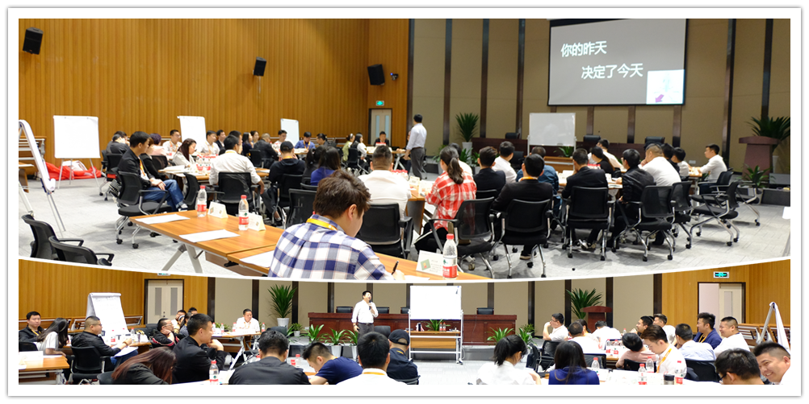
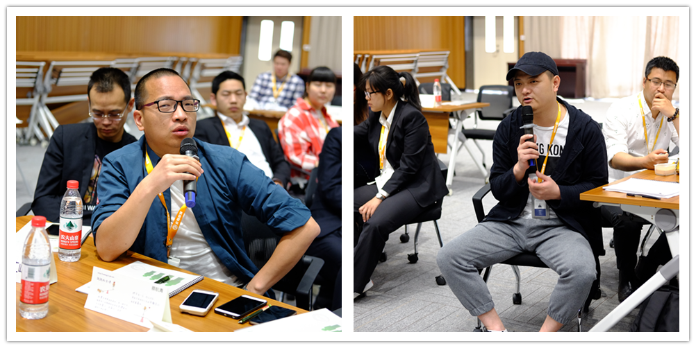

从专业人才到管理高手“银天鹅”第二期培训有啥亮点？
发布时间：2017-05-02 发布人：运营部

从专业人才到管理高手
作为提升长和控股中层干部管理能力的系列培训——“银天鹅”计划课程一直备受学员们的推崇和喜爱。
话说，上一课程，我们学习了《优秀经理人的自我管理》，认清自己的定位和任务，掌握积极主动、以终为始、要事第一、客户至上，是优秀经理人的必备修养。但是不知道大家是不是和长合君有同样的疑惑。
为了满足学员们的需求，“银天鹅”计划第二期培训开课啦！本期课程由知名讲师郭维骐主讲，通过两天的培训学习，长和控股中层干部们学习了如何提升执行力、加强沟通、目标管理以及有效激励员工等方面的管理知识。
不同于想象中培训计划的枯燥乏味，“银天鹅”培训课程分小组教学，圆桌讨论，案例分析，相比之下更加有趣味性和深刻性。
作为一名管理者，明确自己的角色定位，清楚自己适合的管理风格很重要。指令型、辅导型、支持型、授权型，你是哪一种呢？讲师为学员测试管理风格，并传授根据员工意愿和能力确定管理风格的小诀窍。
培训过程中的学员风采展示
通过此次学习培训，学员们更加清楚管理的重要性，明白自己的职责与作用，同时也认识到沟通和团队的重要性，通过培训开拓了自己在管理学中的视野，为提升自己今后管理工作奠定了基础。